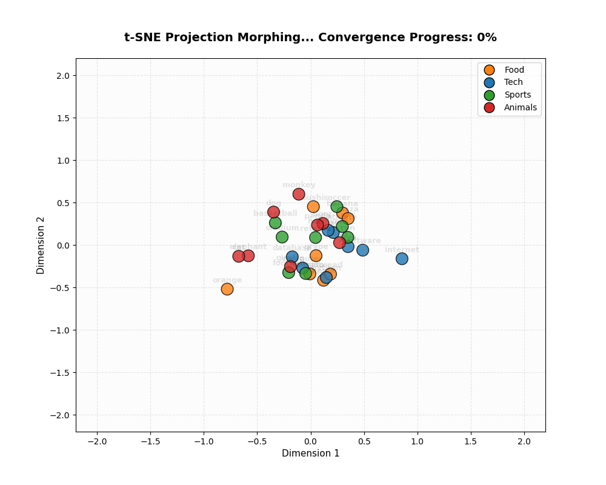
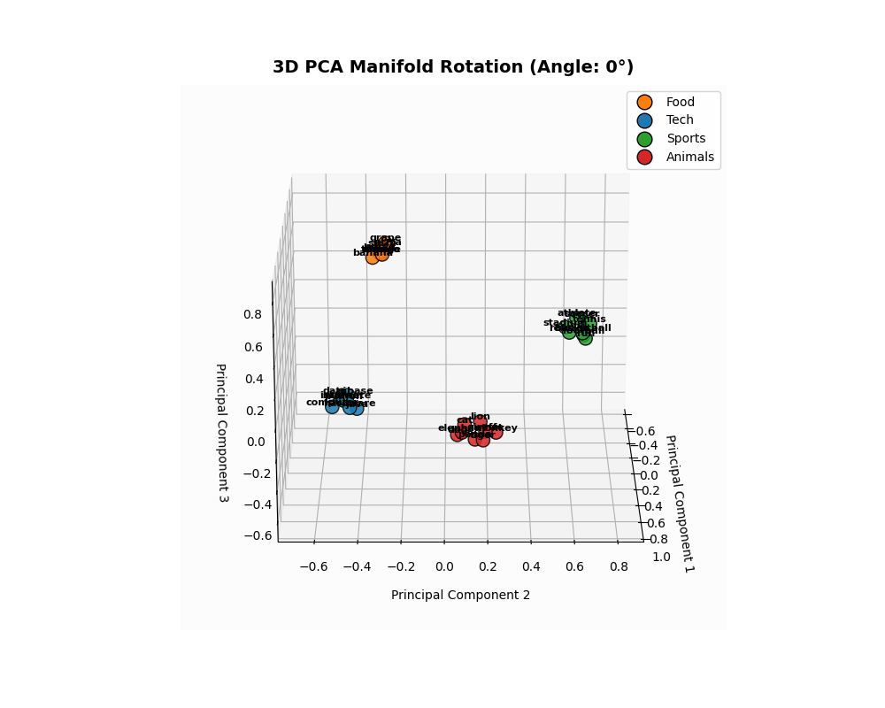

LAB-02: Embedding Geometry & Semantic Search
Estimated time to read: 4 minutes
🎯 Learning Objectives
After completing this laboratory, you will be able to:
- Explain the Manifold Hypothesis and its role in continuous word representation.
- Manually compute Cosine Similarity using NumPy and explain why it is preferred over Euclidean distance.
- Perform dimensionality reduction in 2D and 3D using linear (PCA) and non-linear (t-SNE) algorithms.
- Build a local Semantic Search Engine to index and retrieve text documents by semantic proximity.
🎓 Prerequisites
We recommend having:
- Linear Algebra basics (vectors, dot product, norms).
- Basic statistics (probability distributions, variance).
- Scikit-Learn and Matplotlib installed in your environment.
🧠 Level 1: Intuition & Concepts
1. The Manifold Hypothesis
High-dimensional datasets (like text embeddings in a 100D or 1536D space) lie on lower-dimensional, non-linear manifolds embedded within the high-dimensional space. By mapping tokens into dense vectors, LLMs learn a smooth manifold where:
- Semantic proximity maps to spatial proximity.
- Directions capture conceptual relationships (e.g., King - Man + Woman = Queen).
2. PCA vs. t-SNE Projections
- PCA (Principal Component Analysis): A linear projection that maximizes variance along orthogonal axes. It preserves the global geometry and large distances, but can squish local neighbor structures.
- t-SNE (t-Distributed Stochastic Neighbor Embedding): A non-linear, probabilistic technique that minimizes divergence between pairwise similarities. It excels at preserving local neighborhoods and clusters.
3. Metric Spaces: Cosine vs. Euclidean Proximity
In very high dimensions, Euclidean distance becomes less discriminative because the distance between almost all pairs of points converges to the same value (the curse of dimensionality). Cosine similarity focuses purely on the angular difference (direction) rather than magnitude, which captures semantic alignment more effectively.
💻 Level 2: Implementation
Here is our clean, manual implementation of Cosine Similarity and semantic retrieval:
import numpy as np
def cosine_similarity(u: np.ndarray, v: np.ndarray) -> float:
"""Computes the cosine similarity between two 1D arrays."""
norm_u = np.linalg.norm(u)
norm_v = np.linalg.norm(v)
if norm_u == 0.0 or norm_v == 0.0:
return 0.0
return float(np.dot(u, v) / (norm_u * norm_v))
This math is integrated inside our SemanticSearchEngine, which indexes unit-normalized vectors and queries them using matrix multiplications for high efficiency.
📐 Level 3: Mathematical Foundations
📐 LAB-02: Geometrical Reductions & Metric Spaces Math
Cosine Similarity Formula
The similarity measures the cosine of the angle \(\theta\) between two non-zero vectors \(u\) and \(v\):
PCA (Principal Component Analysis)
PCA projects high-dimensional data onto orthogonal axes that maximize variance. This is done by computing the eigenvectors and eigenvalues of the covariance matrix of the data \(\mathbf{X}\):
The eigenvectors \(v_i\) with the largest eigenvalues \(\lambda_i\) define the principal axes of projection.
t-SNE Pairwise Similarities
In high-dimensional space, we define the probability distribution \(p_{j|i}\) that point \(x_i\) picks \(x_j\) as its neighbor under a Gaussian:
In low-dimensional space, we define the probability distribution \(q_{ij}\) using a heavy-tailed Student-t distribution (1 degree of freedom) to avoid the "crowding problem":
We minimize the Kullback-Leibler (KL) divergence between \(P\) and \(Q\) using gradient descent:
🔬 Level 4: Research Notes (Origin Papers)
- t-SNE Visualization: Laurens van der Maaten and Geoffrey Hinton introduced the t-SNE algorithm (Van der Maaten & Hinton, 2008), showing how Student-t distributions preserve local topologies.
- The Manifold Hypothesis: For a mathematical deep dive into data manifolds, consult the wiki reference (Manifold Hypothesis).
🏭 Production Insights
🏭 Embeddings & Database Optimization
- Offline vs Online Embeddings: Calling embedding APIs in real-time adds 100ms-300ms of latency. Static documents (catalogues, PDFs) should have their embeddings computed offline in batches and cached in a Vector Database.
- Normalizing Vectors: Always normalize your vectors to unit length (\(\|u\|_2 = 1\)) on ingestion. This allows fast dot product calculation instead of heavy cosine similarity equations during similarity search queries.
📊 LAB-02: Empirical Results
Our category-based embedding space (100D) yielded these semantic metric distances:
| Metric Semantics | Value | Purpose |
|---|---|---|
| Average Similarity (Intra-Class) | 0.5945 |
Measures cluster affinity (same category words). |
| Average Similarity (Inter-Class) | -0.0131 |
Measures orthogonality between distinct categories. |
| Discriminative Margin | 0.6077 |
Verifies clean category separation on the manifold. |
🎨 Visualizations of the Manifold
1. t-SNE Morphogenesis (2D Convergence)
Points starting in random coordinates converge onto a 2D plane:

2. 3D PCA Latent Space Rotation
A 3D projection highlights the volumetric separation of the semantic clusters:

🚀 Interactive Playground
We provide a Jupyter Playground prepared to run, experiment, and modify the code from this laboratory interactively, with full support for free execution on the cloud using Google Colab:
🧪 Try It Yourself (Experiments)
- t-SNE Perplexity Shift: In the playground notebook, change the
perplexityparameter from5to30. Note how the local neighborhood structure breaks when the perplexity exceeds the number of sample points. - Out-of-Vocabulary Analysis: Input blended-category queries (like "sports car") to the search engine and analyze which category cluster pulls the vector closest.
🧭 Related Concepts
- Vector Databases & HNSW Indexing: Scalable production retrieval setups for embeddings.
- Self-Attention Mechanics: Using dot products dynamically to calculate contextual similarity between tokens.